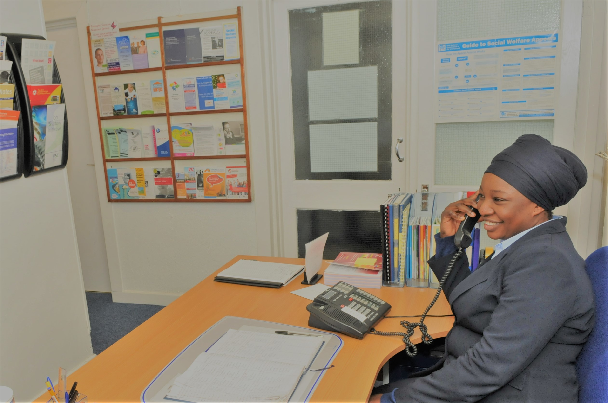

Tallaght Centre for unemployed Ltd. (TCU) is a community resource centre based in the heart of Tallaght Village. The board of the management is a volunteer group who are a sponsoring body for the projects and the employees are participants on Community Employment and Jobs Initiative programmes. TCU has very successfully sponsored a number of valuable CE schemes that make an important contribution to the development and provision of community based services while still maintaining its focus on the needs of the CE programme and participants. The CE projects sponsored by TCU provide a wide range of facilities and support services that benefit the needs of the local community, particularly those affected by unemployment, poverty or economic disadvantage, those who are socially excluded or marginalised within the community. TCU continues to help local groups and organisations through our continuing support and collaboration; we encourage greater interaction within the community initiatives that enables those affected by unemployment and poverty issues to cope with their circumstances in a dignified manner. The needs of the local community are identified directly through the people who use the centre, whether they are unemployed or actively employed, also, through liaison with social welfare, local organisations and community groups.
The benefits occurring as a result of the operations of TCU schemes include:
The people who participate on our CE schemes are trained to a very high standard in administration, accounts and childcare and many go on to employment or further education. While on the schemes they gain valuable experience and expert knowledge of organisations locally and the existing services they provide. Communication skills are improved through dealings with the public, and they leave better equipped to pursue career prospects.
Local people who are long term unemployed are disadvantaged because of their circumstances, Tallaght Centre is a place where they are treated as equals and the facility provides a service that can help them fulfil their needs whether it is to source information or provide access to other services. These individuals can do so in an environment that is beneficial to their needs without feeling victimized or targeted.
People are better informed of the options available to them and are assisted in preparation for employment opportunities due to the quality of information and service they receive in the centre. The centre also provides work experience opportunities to individuals who are training or participating on programmes outside the centre.
Through education, training, re-training and everyday assistance, TCU makes every effort to provide a better quality of life for individuals and groups who are supported by us.

ORIGINS OF TALLAGHT CENTRE FOR UNEMPLOYED (TCU)
TCU is a long established and well respected resource centre in the heart of Tallaght Village. Officially opened in 1990, the centre was set up in the early 80’s to cater for the needs of unemployed people due to the lack of facilities and services in Tallaght and surrounding area. Tallaght Centre for the Unemployed Ltd. Was one of the founder member organisations responsible for the establishment of Dodder Valley Partnership formerly Tallaght Partnership and continues to contribute to the Partnership through its membership of the Partnership Community Development Advisory Group.
TCU MANAGMENT
The board of management of TCU is the sponsoring body for the projects operated by the centre and is made up of a volunteer group who meet regularly to oversee the everyday operations of each project. Board members include people from a range of backgrounds and experience that include statutory bodies, SPC’s, ICTU, SDCC, Civil Service, Legal profession, local TD who all have a particular understanding and interest in the centre and its staff. The sponsors provide ongoing support to the supervisors and participants on the schemes and perform their given duties in a timely and fitting manner using the guidelines set out in the CE Operating Manual and TCU guidelines respectfully.
TCU PROJECTS
TCU sponsor both CE and JI projects and the administration and accounts for each of the projects is based in the centre. Each project operates as an individual entity and all aspects of the projects are managed by the supervisors/team leaders in conjunction with the sponsoring body and DSP.
The Main Scheme is based in St. Dominic’s Hall; this is also the centre of operations for administration of all three projects sponsored by Tallaght Centre for Unemployed.
PURPOSE
The core purpose of the centre is to provide training, education and access to employment opportunities or training initiatives for participants on Community Employment. CE personnel are the frontline of the centre, they are equipped through training and experience to help our clients actively seek out alternatives such as training programmes or return to education options. The purpose of each project is to provide suitable training to the participants that will prepare them for the workforce, also to develop existing training programmes and optimise new opportunities that will assist in the progression of the participants. The centre also caters to the needs of people who use the facility whether they are unemployed or not. The centre is open to the public on a daily basis and operates as a drop-in centre where members of the public can avail of the various services offered and dispensed by the staff and management of the centre. Providing a helpful service to our clients is a priority, we assist them through whatever queries or services they require and we do this in a professional and courteous manner due to the valuable resources we have in our well trained staff all of whom are CE participants.
Tallaght Centre continues to help motivate local people to become more involved in their community, encouraging greater interaction with local groups and organisations that will assist them in overcoming the cycle of unemployment and poverty. Through education, training, re-training and everyday assistance, Tallaght Centre strives to provide a better quality of life for individuals and groups who avail of our services.